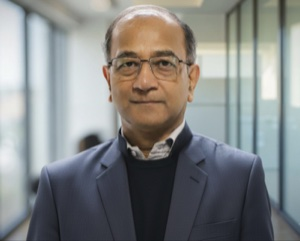
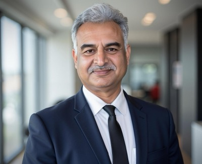
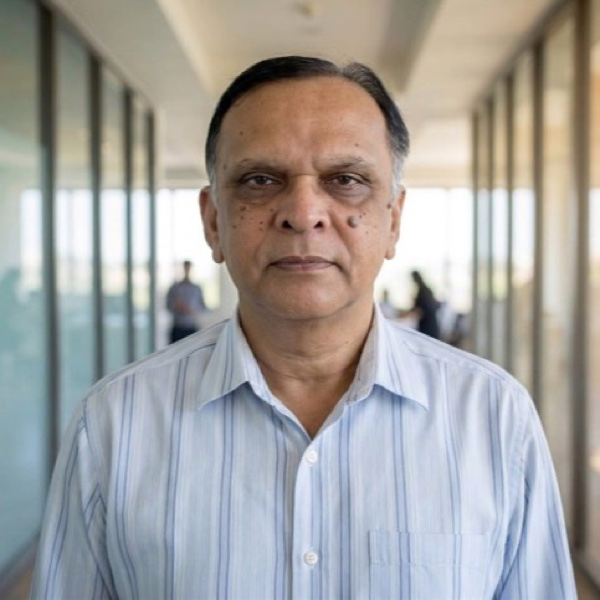
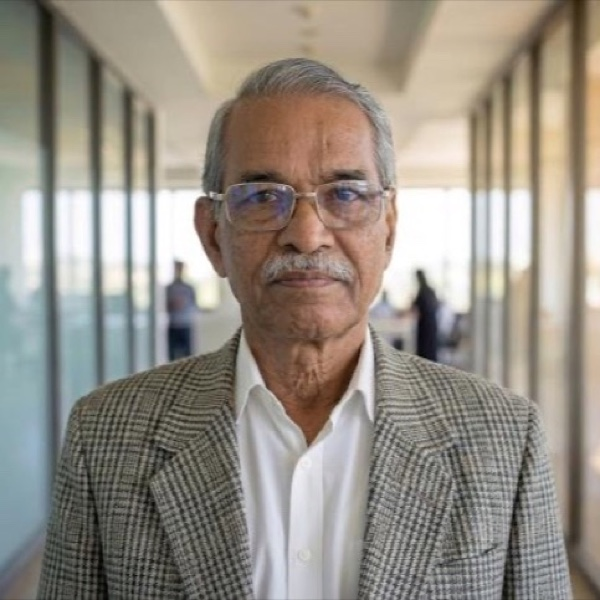
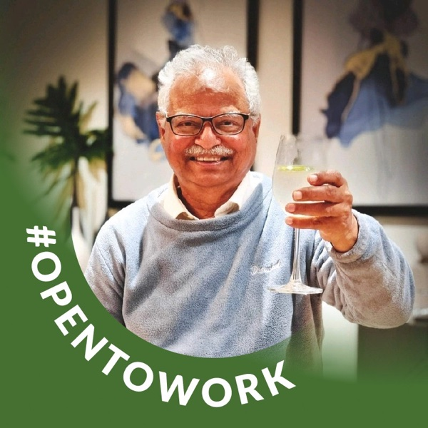

Our Approach
A Staged Engineering Programme
Four phases that share a single linear-mirror neutron-source architecture, extended in stages. Each phase is an engineering step in its own right, within known regulatory and safety constraints.
Phase 1
Near-termCancer Therapy & Industrial Inspection
A proton-lithium (p-Li) accelerator produces epithermal neutrons — protons accelerated onto a lithium target via the 7Li(p,n)7Be reaction — for Boron Neutron Capture Therapy aimed at recurrent head-and-neck cancer (rH&NC) and glioblastoma (GBM), tumour types where conventional radiation often falls short. The same accelerator is designed to provide a particle neutron source (PNS) for industrial non-destructive evaluation in aerospace and advanced manufacturing.
Phase 2
Near-term Concurrent with Phase 1Medical Isotope Production
A Gas Dynamic Trap (GDT) — an axisymmetric linear-mirror neutron source — designed to contribute to India’s domestic fast-neutron medical-isotope capacity. The target portfolio includes Sc-47, Cu-64, Cu-67, and Lu-177. Several of these require neutron energies above 1 MeV at clinical grade — pathways that thermal reactors cannot reach.
Phase 3
Medium-horizonHybrid Energy Systems
A D-T sub-critical hybrid configuration supports research directions in nuclear waste transmutation, advanced fuel breeding, and accelerator-driven sub-critical-system (ADSS) neutronics — including the thorium fuel cycle, where India holds approximately 846,000 tonnes of monazite reserves (roughly an eighth of the world’s total). Aligned with MSV2035 §4.1.3 priorities.
Phase 4
Long-horizonFusion-Class Energy Applications
At the far end of the programme sits the long-horizon question of D-He³ fusion-class energy — an open engineering and policy problem pursued within MSV2035’s national nuclear-physics framing. This is stated as direction, not as a commercial forecast.
What We Do
Our Applications
A single neutron platform serves medicine, industry, energy, and research — each application reinforcing the others.
Medicine & Healthcare
BNCT Cancer Therapy
Precision cellular-level radiation treatment for head & neck cancers, sparing healthy tissue entirely.
Medical Isotope Production
Domestic production of Tc-99m, Lu-177, Cu-64, Sc-47, Y-90 and other isotopes for cancer diagnostics and therapy.
Sealed Source Production
Calibration and reference sources for medical instruments, radiation monitoring, and nuclear metrology.
Industry
Neutron NDE & Radiography
Non-destructive evaluation of aerospace composites, EV batteries, and additive-manufactured components — seeing what X-rays cannot.
PGNAA Process Control
Real-time elemental analysis for on-line quality control in cement, coal, and mineral processing plants.
Materials Irradiation Testing
Radiation hardness qualification for satellites, semiconductors, and space-grade components.
Security & Cargo Inspection
Active neutron interrogation for explosive and fissile material detection at ports and borders.
Energy
Research & Knowledge
Neutron Activation Analysis
Multi-element compositional analysis for archaeology, art authentication, and environmental tracing.
Research Isotopes & Tracers
Custom isotope production for nuclear physics, chemistry research, and diagnostic tracer development.
NuKG Knowledge Platform
A nuclear knowledge graph platform accelerating R&D across the nuclear science community.
Our Technology
Built on Proven Physics
Our technology platform draws on decades of plasma physics research, adapted for near-term commercial applications.
Neutron Source Design
Advanced moderator and reflector assemblies optimised through Monte Carlo simulation for epithermal beams serving both BNCT therapy and industrial NDE.
Linear-Mirror Architecture
A single axisymmetric linear-mirror geometry extended in stages — from accelerator to Gas Dynamic Trap to advanced operations. Builds on decades of mirror-machine physics from the Budker Institute (BINP) and the more recent WHAM high-field demonstration at UW–Madison.
Computational Tools
Proprietary simulation and nuclear knowledge graph platforms that accelerate R&D and serve the broader nuclear science community.
Safety by Design
Fusion and accelerator processes with no fission chain reaction, no spent-fuel inventory, and minimal long-lived waste — designed for regulatory confidence within established AERB and SHANTI Act frameworks.
Regulatory Pathway
A staged AERB licensing progression — Category II for the accelerator and early GDT operations, evolving toward Category I as later phases require — within the SHANTI Act 2025 framework for private participation.
HTS Magnet Systems
High-temperature superconducting (REBCO) magnets provide the field strengths required for confinement in the Gas Dynamic Trap. REBCO tape costs have fallen substantially over the past decade and are continuing to fall, making fusion-class magnetic fields commercially accessible for the first time.
Beam Shaping Assembly
A custom moderator, reflector, and filter stack tunes accelerator-derived fast neutrons into the epithermal energy range required for clinical BNCT. The design is informed by a knowledge graph of over 6,400 published papers on beam shaping and BNCT, including the major operational facilities worldwide.
Tritium Handling Capability
Tritium-related operations begin at the medium-horizon D-T phase. Containment, instrumentation, and operational procedures are being developed against published international guidance and the relevant AERB framework — a competence built in stages, not assumed.
Our People
Led by Deep Expertise
Our team brings together nuclear physics, engineering, and enterprise leadership.
Leadership

Prof. Prabhat Ranjan
Founder

Abhay K. Jha
Co-founder
Abhinav Jha
Operations Director
Advisors

Prof. Y. C. Saxena
Advisor

Prof. Srinivasan Ganesan
Advisor

Prof. C. V. Srinivasa Rao
Advisor
Research & Engineering
Nilormi Das
Research Scientist
Dr. Varun Vijay Savadi
Senior Research Scientist
Chandresh Shah
R&D Engineer
Frequently Asked Questions
Common questions, answered plainly.
Is ASPL Fusion a fusion-energy company?
We are an applied plasma and neutron-systems company. Our near-term engineering work is on a proton-lithium (p-Li) accelerator for BNCT and industrial neutron inspection, and a Gas Dynamic Trap (GDT) — an axisymmetric linear mirror, operating on D-D fuel — for medical-isotope production. D-He³ fusion-class energy applications sit at the far end of a long staged program and are stated as direction, not as a near-term commercial claim.
How does ASPL’s work relate to the Government’s Mega Science Vision 2035?
The Government of India’s Mega Science Vision 2035 — Nuclear Physics, commissioned by the Principal Scientific Adviser and published by DST, sets out national priorities including accelerator-based production of medical radionuclides (§4.2.1), accelerator-driven BNCT (§3.3), and commercialisation of plasma technologies through IPR (§4.2.4). ASPL’s engineering scope overlaps with these directions.
This alignment is structural, not nominal — MSV2035 was published before ASPL was visible and does not name the company. See our national-context page for the full framing.
How does your work relate to BARC, IPR, and other national institutions?
Complementary, not competitive. India’s national nuclear and plasma institutions (BARC, BRIT, IPR, VECC, IGCAR, among others) have decades of world-class scientific capability. ASPL operates as a commercial engineering programme that extends this ecosystem into applied neutron infrastructure for medicine and industry. We do not benchmark our work against these institutions.
When will your facilities be operational?
Our programme is staged within AERB licensing (Category II progressing toward Category I as later phases require), CDSCO medical-device approval, and the SHANTI Act 2025 regulatory framework (passed 17 December 2025; in force 21 December 2025). We do not publish forecast dates for specific facility milestones. Progress updates are issued only when a validated institutional milestone has been reached.
What does ASPL Fusion do, in one paragraph?
ASPL Fusion designs applied plasma and neutron-systems platforms intended to support domestic medical isotope production, accelerator-based Boron Neutron Capture Therapy (BNCT), and industrial neutron applications, within established Indian regulatory and safety frameworks. The near-term engineering work is concrete; fusion-class applications sit at the far end of a long staged program.
Where is ASPL Fusion based?
ASPL Fusion (Agnira Sanlayan Pvt. Ltd.) is a DPIIT-recognised startup (DIPP222699, valid to August 2035). Operations are anchored in Gandhinagar (Gujarat) and New Delhi. Our incubation is at AIC Plasmatech, Gandhinagar — approximately 5 km from the Institute for Plasma Research (IPR) and ITER-India, India’s domestic concentration of plasma and fusion engineering capability.
More background in our insights and on the positioning page.
Get in Touch
Let's Build the Future Together
We welcome conversations with researchers, clinicians, investors, and anyone passionate about fusion's potential for humanity.
Reach Us
Whether you're exploring collaboration, investment, or simply curious about our work — we'd love to hear from you.